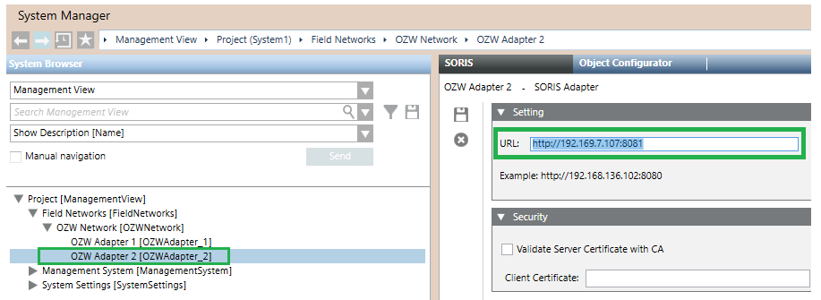

Installing Additional OZW Adapters on the Same PC
Each adapter requires a private set of configuration files. To add additional adapters you need to manually copy and register a new set. Proceed as follows.
- In the Windows installation folder, copy and paste a new C:\Program Files (x86)\Siemens\OZW Adapter_n, with „n“ being the the adapter number.
- In the OZW_Adapter folder, copy and paste a new Install_AdapterAsService_HTTP_n batch file (or Install_AdapterAsService_HTTPS_n, if you want to use the HTTPS protocol).
The original HTTP file contains:Siemens.GMS.OZWAdapter.exe –service –port:8080 - Add the ServiceName:
Siemens.OZW-Adapter_n, with „n“ being the the adapter number. - Add a new port (for example,
8081for the second adapter,8082for third adapter, and so on). - Add a new wsport (for example,
8006for the second adapter,8007for third adapter, and so on).
Examples for HTTP service 2 and 3:Siemens.GMS.OZWAdapter.exe –service –ServiceName:Siemens.OZW-Adapter_2 –port:8081 –wsport:8006
Siemens.GMS.OZWAdapter.exe –service –ServiceName:Siemens.OZW-Adapter_3 –port:8082 –wsport:8007 - Run the new batch file to register and start the service.
- In Desigo CC, in the URL field of the SORIS Adapter configuration, use the same IP address and the specific port according to the configuration defined for each adapter. For example:
http://192.168.7.101:8081
NOTE: The additional adapters can be configured either under the same SORIS network, as in the example below, or under separate SORIS networks.
